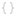
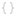

Getting started
Try Hello World exampleGenerate Nunjucks templated problem file sample
See or clone PDDL samples
Configuration


Planning engine
 

Planner configuration error:
.
Fix it.
PDDL parser
See more info about PDDL parsers
Plan Validator
Clone and compile VAL from GitHub or...
Download plan validation tools
Resources
 YouTube Hands-on PDDL channel
YouTube Hands-on PDDL channel Education.planning.domains
Explore Planning.domains PDDL examples
PDDL Reference
 Slack community
Slack community All features of PDDL support in VS Code
What's new in PDDL support
Getting more productive
VS Code Icons for PDDL files e.g.

 GraphViz support
GraphViz supportKeyboard shortcuts
Giving feedback
Submit an issueWrite a review